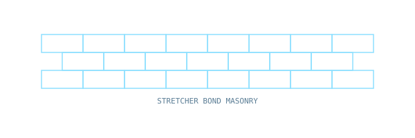

Properties of cement, aggregates, bricks, timber and principles of project management.

Building Materials and Construction — IIT Delhi
Click an option to see the correct answer and a short explanation instantly.